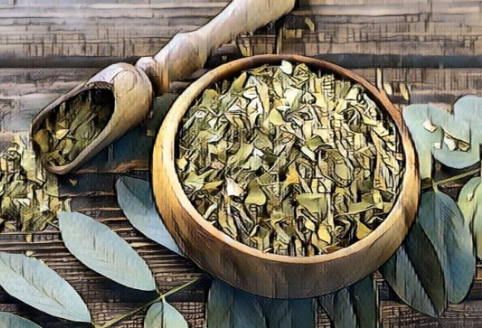

Origem
A erva-mate (Ilex paraguariensis) tem suas raízes nas florestas subtropicais da América do Sul, em áreas que hoje correspondem ao Paraguai, sul do Brasil e nordeste da Argentina. Os povos indígenas guaranis e quíchuas foram os primeiros a descobrir e utilizar suas folhas, apreciando suas propriedades estimulantes e medicinais. Eles consumiam a erva-mate como uma infusão chamada "caá" em seus rituais e também como uma bebida diária, mastigando as folhas ou preparando infusões.
Cultivo
O cultivo comercial da erva-mate começou com os jesuítas no século XVII, que, reconhecendo seu potencial econômico, iniciaram a plantação sistemática em suas missões. Eles implementaram técnicas agrícolas que incluíam a seleção de sementes, o plantio em áreas desmatadas e a adoção de métodos de manejo sustentável.
A planta cresce em ambientes subtropicais com alta umidade e temperaturas moderadas. Leva cerca de três a cinco anos para que a planta atinja a maturidade e esteja pronta para a colheita. Durante este período, os cuidados envolvem irrigação, controle de pragas e poda para incentivar o crescimento saudável.
A colheita é geralmente realizada de forma manual, onde os ramos com folhas maduras são cortados. Este processo é feito de forma seletiva para garantir que a planta possa continuar a crescer e produzir em ciclos futuros.
Após a colheita, as folhas passam por um processo de sapeco (passagem rápida pelo fogo) para inativar enzimas e evitar a fermentação. Em seguida, as folhas são secas em barbacuás (estruturas de secagem) ou em secadores industriais. Depois de secas, as folhas são trituradas e envelhecidas, um processo que pode durar até 12 meses, melhorando o sabor e a qualidade do produto final.
Produtores
O Brasil é um dos maiores produtores mundiais de erva-mate, com destaque para os estados do Paraná, Rio Grande do Sul e Santa Catarina. Entre os municípios que se destacam na produção estão: